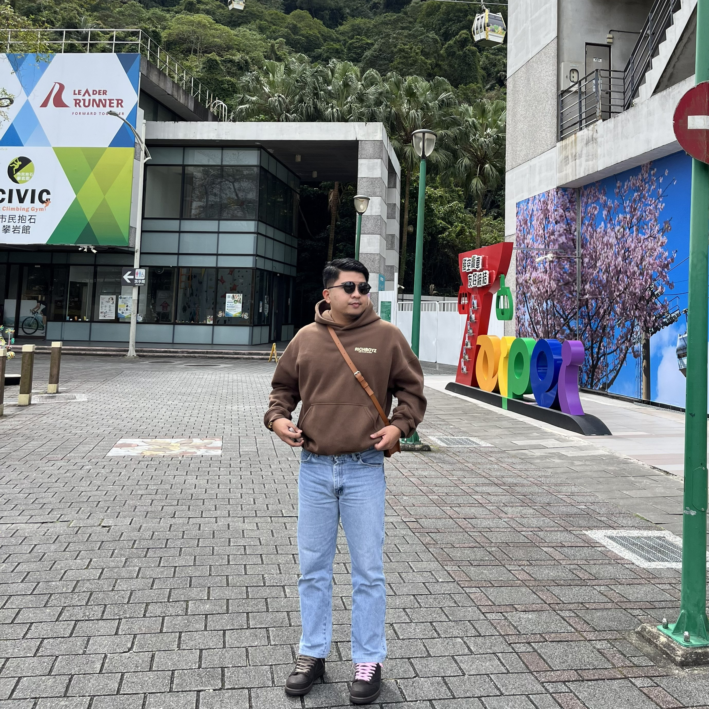

DLMDetail-oriented IT professional from the banking sector, focused on application support, development, and testing. I build and stabilize the systems that move transactions, notifications, and reports — and I document them so the next person doesn't have to guess.
My background is a little unusual for a developer: a B.S. in Industrial Engineering from the Polytechnic University of the Philippines, then four years deep inside bank operations. That mix shows up in how I work — I treat code as a process to be measured, optimized, and made dependable, not just shipped.
I've spent that time across application support, development, and testing — fixing notification pipelines for card transactions, automating repetitive operational work, writing unit tests, and keeping the documentation honest. Strong communication and problem-solving are the parts I lean on most.
A timeline of roles across consulting and banking — most recent first.
Case studies from production banking systems, plus personal builds. Proprietary work is described without source for confidentiality.
Proficiency across the stack I use for development, automation, and data work.
Available for developer and programmer analyst roles. The fastest way to reach me is email or LinkedIn.